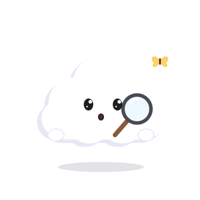

Say how you feel
Pick from 23 moods, each with its own little cloud, or write a few words in your own way.
Upmood is a gentle daily check-in. Pick a mood, and Moodle, a little cloud who feels it with you, brings quotes from remarkable people, chosen for today.
Free to start · 20 quotes a day · iPhone
Try a mood
Knock knock! How are you feeling?
Joy is not in things; it is in us.Richard Wagner
Moodle feels what you feel, from sunny to stormy and everything in between. No mood is wrong.
It takes less than a minute, and you can stop whenever you like.

Pick from 23 moods, each with its own little cloud, or write a few words in your own way.

Quotes are chosen for your mood, so a hard day gets comfort and a good day gets to shine.

Your check-ins gather in a history, and every week brings a gentle summary of how it really felt.
Once a week, a gentle look back: how you felt, whose words you read, and how often Upmood was there for you. No scores, no streaks, just a kind note at the end.
Every screen takes the sky of how you feel today, and Moodle, the little cloud, changes with you.
Words from remarkable people, chosen for each mood. Swipe through, like what lands.
A daily “how are you?” at the time you choose. Quote notifications are optional.
Every check-in, day by day, with the words you wrote.
Keep the lines you want to come back to, all in one quiet place.
When you want more of the good stuff. Free to start, always.
Mood data is personal, so Upmood keeps things simple and asks before using anything beyond the basics.

Take a breath. Then tell me how today feels.
Download on the App Store